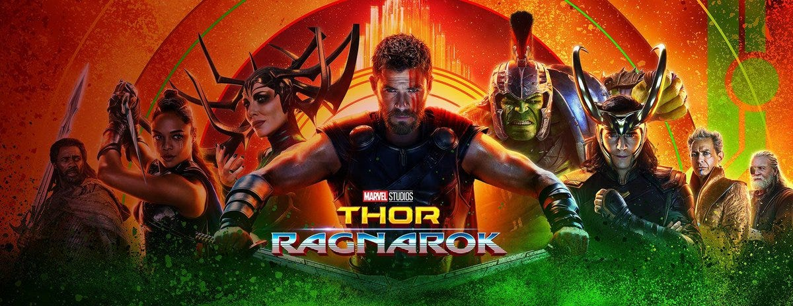
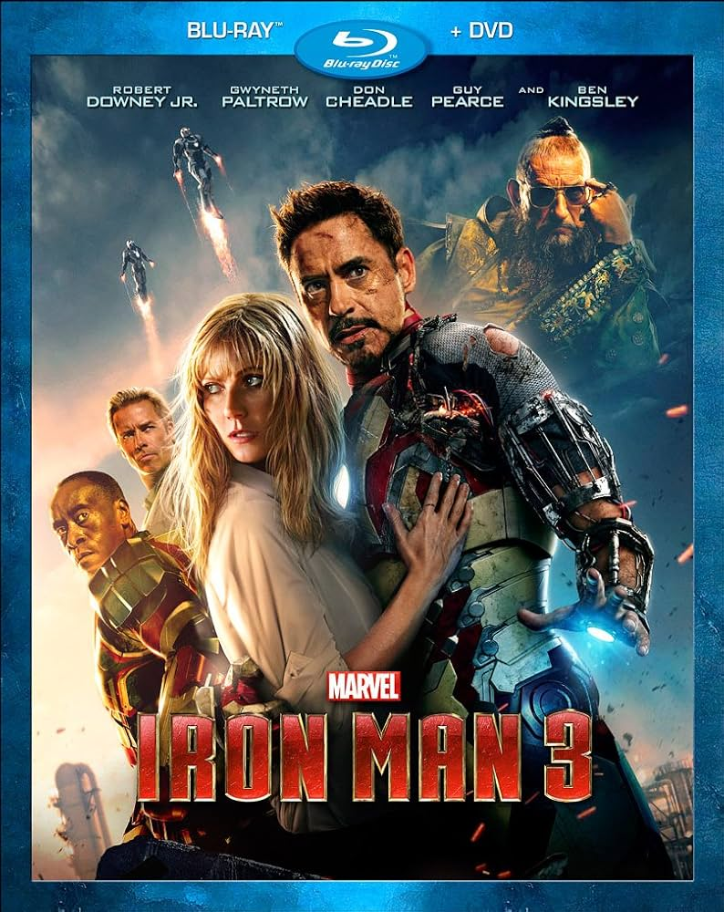

-
Name: Hulk
-
Category: Comic Book Character
-
Quote:I don't know who I am. I don't know what I'm becoming. But I know one thing for sure, you wouldn't like me when I'm angry.
About The Character
The Incredible Hulk is a superhero appearing in American comic books published by Marvel Comics. Created by writer Stan Lee and artist Jack Kirby, the character first appeared in the debut issue of The Incredible Hulk (May 1962). In his comic book appearances, the character, who has dissociative identity disorder (DID), is primarily represented by the alter ego Hulk, a green-skinned, hulking, and muscular humanoid possessing a limitless degree of physical strength, and the alter ego Dr. Robert Bruce Banner, a physically weak, socially withdrawn, and emotionally reserved physicist, both of whom typically resent each other.
Hulk is best known for:
-
Healing And Regenerating Abilities
-
He Can Leap Across Continents
-
He Can Breathe Underwater
Appearances
| Image | Name | Description |
|---|---|---|

|
Avengers |
The Avengers are an all-star ensemble cast of established superhero characters from the Marvel Comics portfolio. Diegetically, these superheroes usually operate independently but occasionally assemble as a team to tackle especially formidable villains. This in contrast to certain other superhero teams such as the X-Men, whose characters were created specifically to be part of their team, with the team being central to their identity. |
|  | Ragnarok |
Imprisoned on the other side of the universe, the mighty Thor finds himself in a deadly gladiatorial contest that pits him against the Hulk, his former ally and fellow Avenger. Thor's quest for survival leads him in a race against time to prevent the all-powerful Hela from destroying his home world and the Asgardian civilization. |
|  | Iron Man 3 |
Tony Stark begins narrating the story of how he lost everything, stating how it all started at a New Year's Eve party in 1999; Stark meets the eccentric and physically disabled Aldrich Killian, who promotes his company, Advanced Idea Mechanics. However, Stark, deciding to research another operation, Extremis with Maya Hansen misleads Killian into believing he was interested in his ideas. |